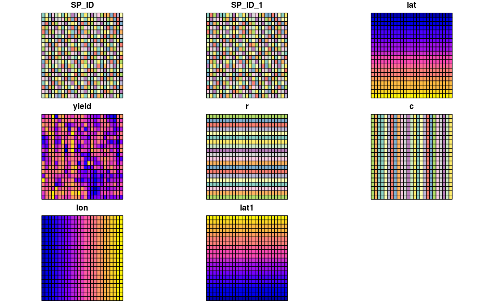

Mercer and Hall wheat yield data, based on version in Cressie (1993), p. 455.
wheat
The format of the object generated by running data(wheat) is a three column data frame made available by Hongfei Li. The example section shows how to convert this to the object used in demonstrating the aple function, and is a formal class 'SpatialPolygonsDataFrame' [package "sp"] with 5 slots; the data slot is a data frame with 500 observations on the following 6 variables.
lat local coordinates northings ordered north to south
yield Mercer and Hall wheat yield data
r rows south to north; levels in distance units of plot centres
c columns west to east; levels in distance units of plot centres
lon local coordinates eastings
lat1 local coordinates northings ordered south to north
Cressie, N. A. C. (1993) Statistics for Spatial Data. Wiley, New York, p. 455.
The value of 4.03 was changed to 4.33 (wheat[71,]) 13 January 2014; thanks to Sandy Burden; cross-checked with http://www.itc.nl/personal/rossiter/teach/R/mhw.csv, which agrees.
Mercer, W. B. and Hall, A. D. (1911) The experimental error of field trials. Journal of Agricultural Science 4, 107-132.
# NOT RUN { data(wheat) wheat$lat1 <- 69 - wheat$lat wheat$r <- factor(wheat$lat1) wheat$c <- factor(wheat$lon) wheat_sp <- wheat coordinates(wheat_sp) <- c("lon", "lat1") wheat_spg <- wheat_sp gridded(wheat_spg) <- TRUE wheat_spl <- as(wheat_spg, "SpatialPolygons") df <- as(wheat_spg, "data.frame") row.names(df) <- sapply(slot(wheat_spl, "polygons"), function(x) slot(x, "ID")) wheat <- SpatialPolygonsDataFrame(wheat_spl, data=df) # }#> Reading layer `wheat' from data source `/home/jn/Documents/spData/inst/shapes/wheat.shp' using driver `ESRI Shapefile' #> Simple feature collection with 500 features and 8 fields #> geometry type: POLYGON #> dimension: XY #> bbox: xmin: 1.255 ymin: 1.35 xmax: 64.005 ymax: 67.35 #> epsg (SRID): NA #> proj4string: NAplot(wheat)